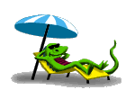
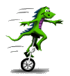
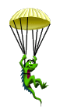
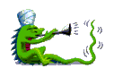

You are hereby invited to…
❄ Jeffjar's thesis extravaganza ❄
~ a celebration of life, science, music, community ~
and other assorted shenanigans
❄ ❄ ❄ ❄ ❄ ❄
At long last — after six years of toil! — my PhD is coming to a triumphant end. To celebrate this once-in-a-lifetime occasion, I would like to bring together my dear friends and family for a spectacular weekend bonanza:
- Thesis Defense: Thu, Dec. 3 at 2:30pm (location TBD)
- Music Recital: Sat, Dec. 5 at 2:30pm (The Lilypad)
- Afterparty: Sat, Dec. 5, at 7:30pm (location TBD)
Throughout the weekend, we'll also have other informal events to hang out, meet friends and family, sightsee, and explore the neighborhood. ☺
❄ ❄ ❄ ❄ ❄ ❄
I think we should just make you a knight
-Titowhat the actual #@*! / that's literally less than an atom width
-Spenceryou are permitted to get less than 8 hours of sleep tonight
-Clemi guess this is ecstasy of the spencerian sort
-me你到底什麼時候會畢業啊？
-Fatherpretty clutch looping from you fr
-HarrisonTsk tsk, why bother fighting fate? Just take a random walk!
-Yuyangyok yok abi ya
-Berk

Lodgings
Most happenings will take place in the vicinity of my apartment (near Market Basket), a beautiful and walkable neighborhood near the Somerville/Cambridge border (affectionately called "Camberville" by locals).
If you want to stay in a hotel, the Cambria hotel is a solid option (7 minute walk from my apartment!), newly built a few years ago, with a delightful hotel-adjacent bar/restaurant downstairs.
If you want to stay in an Airbnb, we'll set up a group Airbnb type situation nearby. Text me to be added to the group. (I think it will be around 6-8 people total.)
If you want to stay on my couch, ask Jerry for permission.

Local attractions
- Broadsheet
- Your local coffee shop and roaster: the perfect place to read performatively and judge and be judged. Their nitro cold brew is known to put you into a strange, trance-like mood. Rumor says it's got something more than caffeine.
- Bow Market
- Your local hipster market replete with record shops, trinket stores, vintage clothing shops, and just about anything your Brooklynian heart desires. One day of these days I'll try their natural wine bar…
- Cicada
- Their sea salt Vietnamese coffee is one of the strongest drinks in Cambridge. It is an experience to behold. I advise drinking it before noon.
- Muji Harvard Square
- Fascinating architectural layout and good stationary. This location caused quite a stir when it opened.
- Harvard Natural History Museum
- The glass flower exhibit is something to behold! And they have a cool rock collection!
- Lincoln Park
- A great neighborhood park, especially in the summer. In the winter it is more quiet but ocassionally the skateboarders will still show up.
- Market Basket
- A great grocery spot for cheap deals. All kinds of people shop here. When it gets busy you have to fight for your life.
(More information to come soon)

FAQs
- Why are you doing this?
- Why not? It's a great way to celebrate this chapter of my life with my dear friends and family. If you're traveling from afar for the PhD defense, I should take the chance to share some music to express my gratitude for all the support and love on this journey. Think of it as a mini-wedding — an excuse to bring people together and celebrate being alive. And honestly, my PhD has already lasted longer than several romances…
- How many nights should I plan to stay?
- Well, the defense itself is Thursday afternoon (so you can come in that morning) and the recital/party are on Saturday, so I think staying three nights (Thu/Fri/Sat) is a good bet. If you come just for one day, I think Saturday is best. And if you want to stay for longer (e.g. to work remotely) you are surely welcome to, though I will be very stressed out before the defense.
- What is your thesis about?
- My advisor and I have devised a way to design artificial proteins that change shape when they bind to a small molecule. Such shape-changing proteins can be applied in biosensors such as the glucose patch (but for monitoring other kinds of metabolites in the blood). You can check out my advisor's twitter thread for some shiny gifs, and you can read our preprint on bioRxiv.
- What music will you play?
- The first half is solo piano, and the second half is jamming with all the lovely music friends I've made in grad school! I will play Bach (of course), some Chopin preludes, and the
world premiere
of a composition I wrote in 2020. After a brief intermission, we will have jazz, funk, and city pop tunes, and then it will devolve into a dance party and a crazy jam until the Lilypad kicks us out. We have it booked 2-5pm. - Are +1's welcome?
- Yes!
- Will there be a zoom option?
- Yes, definitely for the defense! TBD for the music and the afterparty.
